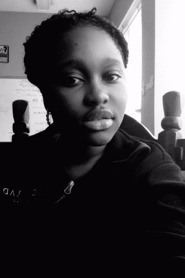

My name is Nana Harrison. I am from Accra, Ghana. I attend an all Girls Private school called Josephinum Academy. I as of 2017 a rising senior. I love to read and knitt and I aspire to become an Obgyn. My highschool experience was great. Ofcourse there were high and low moments, however I choose to surround myself near people who are postive and emit postive energy. Going to an all girls school; I have had a better understanding of girl power and the idea the women can do anything they put their mind to. I have an amazing bond with the girls at my school. We all help and encourage each other. We are there for each other. Our teachers not only teach us but they care about us deeply and they are always checking in on us.
I am very focused on my school work however, I wish that during my highschool career I went out and experience life. My advice to you would be to try new things in highschool. You never know what might peak your interest. ALso try to talk to people who you rarely talk to. You may find new friendships that will last a life time. I would ecourage you to challenge yourself. If you are the smartest person in the group then you are in the wrong group. Also this is the time to be selfish with your time. Learn when to say no and stand up for yourself. Put yourself first. Also, when it comes to drama, it is not worth it. I know so many people tell you this but after highschool you will never see them again. There is no need to engage people who are bringing stress into your life
My advice for you guys is to never give up, no matter how much you want to; instead find a motivation not to give up. Also, ask for help from your teachers and create a good relationship with your teachers because they will help you when you need them.
